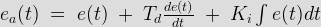
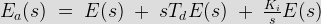
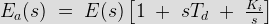
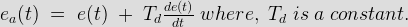
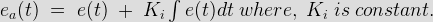

PID control stands for proportional plus derivative plus integral control. PID control is a feedback mechanism which is used in control system. This type of control is also termed as three term control. By controlling the three parameters - proportional, integral and derivative we can achieve different control actions for specific work. PID is considered to be the best controller in the control system family. Nicholas Minorsky published the theoretical analysis paper on PID controller. For PID control the actuating signal consists of proportional error signal added with derivative and integral of the error signal. Therefore, the actuating signal for PID control is -

The Laplace transform of the actuating signal incorporating PID control is

or

There are some control actions which can be achieved by using any of the two parameters of the PID controller. Two parameters can work while keeping the third one to zero. So PID controller becomes sometimes PI (Proportion integral), PD (proportional derivative) or even P or I. The derivative term D is responsible for noise measurement while integral term is meant for reaching the targeted value of the system. In early days PID controller was used as mechanical device. These were pneumatic controllers as they were compressed by air. Mechanical controllers include spring, lever or mass. Many complex electronic systems are provided with PID control loop. In modern days PID controllers are used in PLC (programmable logic controllers) in the industry. The proportional, derivative and integral parameters can be expressed as - Kp, Kd and Ki. All these three parameters have effect on the closed loop control system. It affects rise time, settling time and overshoot and also the steady state error.
| Control Response | Rise time | Settling time | Overshoot | Steady state error |
|---|---|---|---|---|
| Kp | decrease | small change | increase | decrease |
| Kd | small change | decrease | decrease | no change |
| Ki | decrease | increase | increase | eliminate |
PID control combines advantages of proportional, derivative and integral control actions. Let us discuss these control actions in brief.
Proportional control : here actuating signal for the control action in a control system is proportional to the error signal. The error signal being the difference between the reference input signal and the feedback signal obtained from input.
Derivative control : the actuating signal consists of proportional error signal added with derivative of the error signal. Therefore, the actuating signal for derivative control action is given by,

Integral control : for integral control action the actuating signal consists of proportional error signal added with integral of the error signal. Therefore, the actuating signal for integral control action is given by

PID controller have some limitations also apart from being one of the best controller in control action system. PID control is applicable to many control actions but it does not perform well in case of optimal control. Main disadvantage is the feedback path. PID is not provided with any model of the process. Other drawbacks are that PID is linear system and derivative part is noise sensitive. Small amount of noise can cause great change in the output.
 by
by